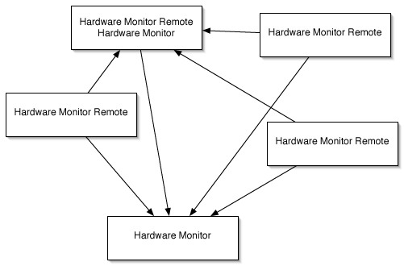

Monitoring remote computers |
Hardware Monitor and Temperature Monitor can also monitor remote computers. This means it is possible to contact an arbitrary number of other computers over the network, and access their sensors as well. The readings will be displayed in addition to the values of the local sensors.
The only thing you need are additional copies of the application Hardware Monitor Remote which have to be installed on each of the remote computers that should be monitored. You also need a registration key ("license to use") for each computer that should be monitored at the same time. You can connect to an unlimited number of computer simultaneously and monitor them all from a single workstation. (In practice, the actual number may be limited by the speed of your network.) Of course you can also use several monitoring stations to receive data from an arbitrary number of other computers.
In the following example, 4 computers are running Hardware Monitor Remote while 2 are running Hardware Monitor. Note that one of the system is running both applications at the same time. The arrows indicate in which direction the sensor readouts are being transferred.

In the example above, 5 (not 6) registration codes are needed (under the assumption, all 5 computers are running at the same time).
There is no gratis version of the remote monitoring tool (no "Temperature Monitor Remote"). However, you can use Temperature Monitor to connect to a Hardware Monitor Remote system. In this case the application is limited to displaying temperature sensors on the local monitoring computer, but it will display all sensors of the monitored remote computer.
To connect to a remote computer which is running a registered copy of Hardware Monitor Remote, use the following instructions:
Hardware Monitor will try to contact the selected remote computer. If it could not be reached, you will receive an error message after a few seconds. In this case please check your network configuration and the operational state of the remote computer. Computers already connected are marked with a blue icon in the remote computer list.
If the remote computer had never been connected by the current computer before, new preference settings for the remote sensors will be added automatically. You should open the preferences window and verify if all preferences are set as desired.
Additional information can also be found in the reference manual of Hardware Monitor Remote.
You can define groups of computers in your network which should be connected by a single mouse click. This is helpful when monitoring different classrooms, for example. Use this feature by selecting the pull-down menu Connect list in the lower right corner of the connect window. You can define an unlimited number of computer groups which will be connected in one step by selecting their respective items in this menu.
To define such a list of computers, select the item Edit Computer Lists…. A configuration sheet will appear. Press the button + below the lower table to add a new computer group. The new entry will be shown in the hierarchical overview Computer lists and members. After select a list in this overview, pressing the button + again will add a new member to that list. You can edit the list names, computer names and port numbers as desired. Note that you have to use DNS names or IPv4 addresses to refer to a computer. You cannot use the designations called "computer names" of Mac OS X. Entries or whole lists can be removed by the - button. The button Add selected computers to selected list can be used to automatically refer to one or more computers running Hardware Monitor Remote which are currently online in your network. Select a list in the lower overview, select one or more computers in the upper table to use this.
After pressing OK, the sheet will close and you can use the defined computer lists in the Connect list pull-down menu.
You can display a list of all computers which have an active connection to your current computer. This list can also be used to release a connection.
Select the menu item Window > Show Remote Connections or press the key combination ⌘+⌥+K. The window Connected Computers will appear. It shows the computer names, model types, serial numbers, IP addresses, DNS names, and the number of sensors found.
To disconnect from one of the computers, select it in the table and press the button Disconnect. Note that you cannot disconnect from your own computer.
If a remote computer enters sleep mode, all its sensors will be powered down, so it is no longer possible to receive current readouts or other information from it. The application handles this automatically and will release the connection to the remote computer. The monitoring computer will display a warning message when this happens. If you don't like to be informed in this case you can switch off the warning message using the General pane of the preferences window.
If your own computer enters sleep mode, the situation is a bit different: The current computer can no longer receive readings but the remote computers are still acquiring data. In this case the local application will automatically try to reconnect to all remote computers as soon as it is waking up.
It will take several seconds until all remote computers have been reconnected. Mac OS X needs some time to reactivate all network features after it has been awoken from sleep mode.
The application won't make any difference between local and remote sensors. You can add sensors to the desired output channels, remove or reorder them. Just open the preferences window and readjust the settings accordingly as discussed earlier. The fourth column in the sensor tables shows the name of the computer each sensor belongs to.
Preference settings for remote sensors will still be stored if you disconnect from the computer hosting the sensors. The application will automatically remember the settings when you reconnect. Currently disconnected remote sensors just disappear from all output channels and will reappear later.
Some status windows automatically open a new copy of the window for each computer which is currently connected. This includes the following displays:
For example, if you have 5 computers currently connected in addition to the local computer, and you select the menu item Window > Show Overview, the application will open 6 copies of the Sensor Overview Window, one for each computer.